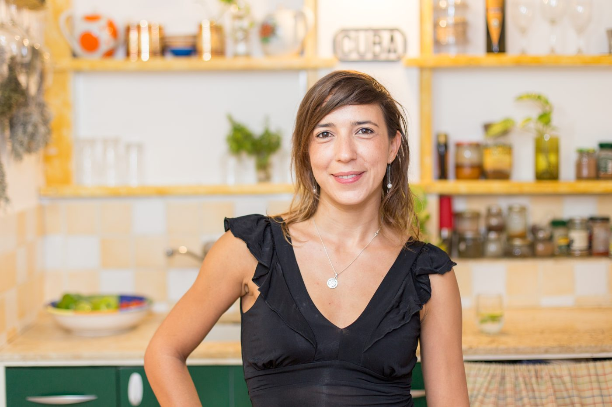
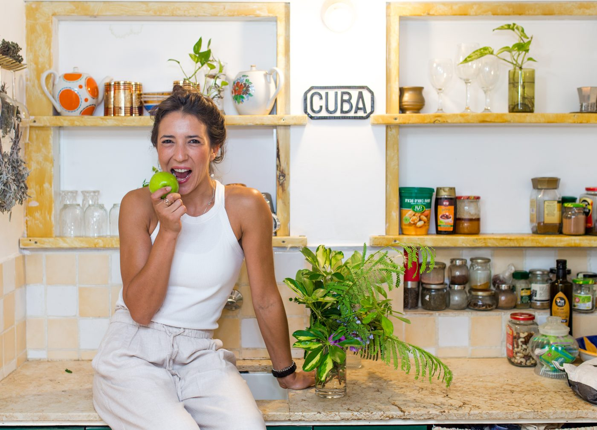

אני מלווה אנשים אינטליגנטיים שמתמודדים עם עייפות כרונית, מתח בבטן ואכילה רגשית, לרפא את המערכת מבפנים החוצה. שילוב של תזונה קלינית, יוגה סומטית וויסות מערכת העצבים – כדי לחזור להרגיש שליטה, אנרגיה ושקט בתוך הגוף.

זה מה שקורה כשהגוף חוזר לעבוד איתכם, ולא נגדכם. הגוף שלכם יודע להשתקם. כשמבינים איפה המתח ננעל – במערכת העיכול, בשרירים או בנשימה – אפשר לשחרר אותו בעזרת כלים ביולוגיים מדויקים. אתם תחזרו לישון טוב, הבטן תירגע, והאנרגיה תחזור. לא בכוח מחשבה או במאמץ מתיש, אלא דרך פיזיולוגיה נכונה.
הגוף והמוח שלכם עובדים יחד. תהליך ליווי המיועד לכל מי שהתעייף ממאבק יומיומי באכילה רגשית, סוכר, בעיות עיכול, עייפות כרונית וכמובן ירידה במשקל. בעזרת תזונה קלינית וכלים פשוטים לוויסות הגוף, אנחנו לא רק מאזנים את המדדים ומרגיעים את הבטן – אנחנו משחררים את הסטרס, מנקים את "הערפל המוחי" ומחזירים לכם את השקט והאנרגיה.
לתיאום פגישת אבחון ←הרצאות וסדנאות המספקות לעובדים כלים ביולוגיים וסומטיים פרקטיים. נלמד כיצד להזין את המוח כדי לשמור על חדות קוגניטיבית, למנוע את "קריסת האנרגיה" של שעות הצהריים, ולווסת עומס ומתח – כך שהצוות נשאר חיוני, ממוקד ורגוע לאורך כל יום העבודה.
סטרס כרוני הוא לא רק מצב נפשי, הוא אירוע ביולוגי שמשנה הורמונים, עיכול, שינה ורמות סוכר. לכן שינוי אמיתי דורש לפגוש את הגוף בכל הרמות האלה יחד, ולא כל אחת בנפרד. זו בדיוק העבודה שאני עושה, מחברת שלושה תחומים שבדרך כלל מגיעים לחוד.
כשהמערכת הסימפתטית, מנגנון "הילחם או ברח", פעילה לאורך זמן, הקורטיזול נשאר גבוה והציר בין המעי למוח יוצא מאיזון. ייצור מוליכים עצביים במעי, כמו סרוטונין, נפגע, ותהליכי דלקת מתגברים. אלה תהליכים ביוכימיים מדידים, ואפשר להשפיע עליהם.
תזונה מותאמת שמייצבת את רמות הסוכר בדם, תומכת במיקרוביום, ומספקת לגוף את אבני הבניין לייצור מוליכים עצביים. סוכר יציב יותר משמעותו אנרגיה ומיקוד יציבים לאורך היום. זה לא "לאכול בריא" כללי, אלא פרוטוקול שמותאם לכם.
נשימה איטית ומכוונת מפעילה את עצב הוואגוס ואת המערכת הפאראסימפתטית, זו שאחראית על הרגעה והתאוששות. תרגול סומטי משחרר מתח שנאגר בשרירים וברקמות, ומאותת לגוף שהוא בטוח. כלים פשוטים, שאפשר לתרגל בכמה דקות מול המסך.
ביקורות אמיתיות מפרופיל הגוגל שלי, כמו שהן. לכל הביקורות בגוגל ←
עברתי עם יוליה תהליך מדהים שבו למדתי להקשיב הקשבה עמוקה לתחושות הפנימיות של הגוף וחקירה משותפת של התזונה שמשאירה אותי עם אנרגיות מאוזנות לאורך כל היום, וזה השפיע על הכל בעצם. כל זה תודות לקשב והסבלנות של יוליה. ממליצה בחום
ממליץ בחום על יוליה מעבר לידע המקצועי האדיר שלה כדיאטנית קלינית, היא ניחנה ביכולת נדירה להקשיב באמת ולהתאים את התוכנית לאורח החיים האישי. השילוב של מקצועיות ללא פשרות יחד עם רגישות וליווי צמוד הופך את כל התהליך לחוויה חיובית ומעצימה. מי שמחפש שינוי אמיתי ובריא – זה המקום
איזו אנרגיה! מהרגע הראשון שרואים אותה ידעתי שאני במקום הנכון. אותנטית וכזו עניינית. ובכלל ארגז הכלים שלה בשילוב האינטליגנציה הרגשית שלה לא פוגשים כל יום ממליץ בחום!
הסדנה הייתה כל כך מעניינת וקיבלתי המון כלים להתמודדות בעזרת תזונה נכונה במצבי רוח שונים יוליה המהממת נותנת כלים פרקטיים ליום יום וממש משנה דרך חיים מממליצה לכל אחד לעבור את הסדנה הזו 🫶
אחת הסדנאות היותר משמעותיות שעברתי. סוף סוף סדנה עם הסברים שקל להבין וליישם. סוף סוף סדנה עם כלים הצלחתי להשתמש בהם ביום יום ולמדוד את ההשפעה. עם מרחב נעים ואינטימי.
ליווי מקצועי, אישי ונעים. הרגשתי שיש מענה מדויק למה שאני צריכה, והצלחתי לייצר שינוי אמיתי בהרגלים שלי. ממליצה מאוד

אני יוליה קרמר, דיאטנית קלינית עם B.Sc בביולוגיה מולקולרית. יצאתי לדרך עם רצון להבין את הגוף במדויק, אך גיליתי שאנשים רבים מבינים הכל בראש – ועדיין המערכת שלהם קורסת מעומס. הבנתי שכדי ליצור ריפוי אמיתי שמרגיש טוב לאורך זמן, חייבים ללמוד להקשיב לשפה של הגוף, ולכן הוספתי לידע המדעי הכשרה יוגה סומטית והתמחות בוויסות מערכת העצבים.
היום אני עובדת עם אנשים שמבינים הכל בראש, ועדיין הגוף לא שומע.
בעמוד הפייסבוק שלי אני משתפת כלים, מחקרים בשפה פשוטה,
וטיפים קטנים שאפשר להפעיל כבר היום.
השאירו מייל ותקבלו מיד את "להחזיר את האוויר", חמישה כלים פרקטיים שאפשר להפעיל בין פגישות, במשרד או בבית. בלי ספאם, בלי עומס.
המייל נשמר רק לשליחת תוכן. אפשר להסיר בכל עת.בואו ניפגש ל-45 דקות של אבחון קליני וסומטי. נמפה את האתגרים שלכם, נבין בדיוק למה מה שניסיתם עד היום לא עבד, ונבנה את תוכנית הריפוי המדויקת לכם. עלות פגישת האבחון: 200 שקלים.